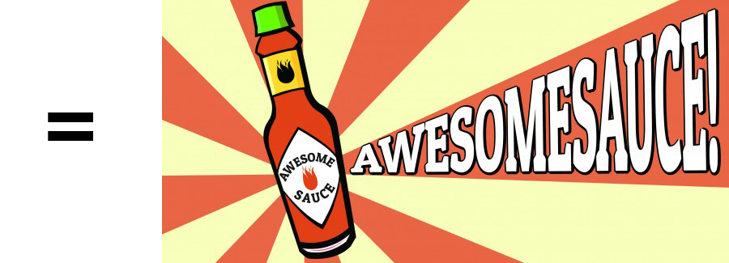

Next Steps
As mentioned before, the goal of this presentation is to spark a conversation in the community that will lead to a collaborative solution for some of the problems many of us face.


Brandon Williams (crazysix)
This is a noob's explaination of how a simple idea using helpful tools could be a powerful altenative, potentially improving the methods currently in place by exploring alternatives.
Drush
+ Jenkins
This allows us to:
Jenkins is an award-winning application that monitors executions of repeated jobs, such as building a software project or jobs run by cron. Among those things, current Jenkins focuses on the following two jobs:
https://wiki.jenkins-ci.org/display/JENKINS/Meet+Jenkins
Jenkins is a dumb butler. It only executes your existing jobs, records output, and appropriate actions as dictacted by you.
Find a drush command that needs to be run.
For testing purposes, we will use drush cc all.
As mentioned before, the goal of this presentation is to spark a conversation in the community that will lead to a collaborative solution for some of the problems many of us face.


But tell us how to do it better. We are open to any suggestion or criticism, but we expect you to contribute to a workable, acceptable solution!
/